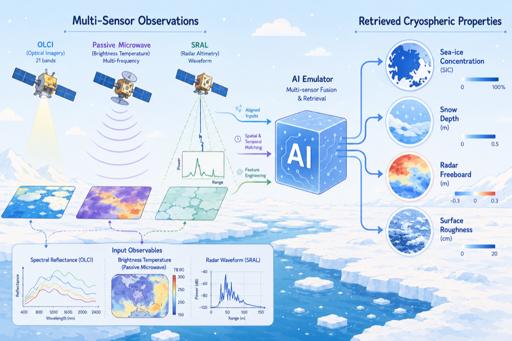
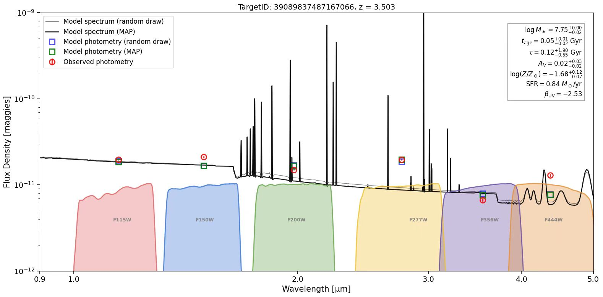

Deep Learning for Radar Altimetry Echo Generation in Sea Ice Surface Image Recognition
Generating physically consistent SAR altimetry waveforms from Sentinel-3 OLCI sea-ice surface imagery using deep generative models.
View research
Academic Homepage
I am an MSci Physics student at University College London, working at the intersection of radar altimetry, sea-ice remote sensing, and deep learning. Working with Dr. Michel Tsamados at the Centre for Polar Observation and Modelling (CPOM), I apply AI-driven methods to cryospheric remote sensing.
My broader interests include physics-informed deep learning, scientific machine learning, satellite image processing, and data-driven methods for geophysical and astronomical observations. I am particularly interested in extending these approaches to InSAR-based surface-deformation monitoring, glacier and permafrost change detection, and satellite-driven natural-hazard assessment.
Generating physically consistent SAR altimetry waveforms from Sentinel-3 OLCI sea-ice surface imagery using deep generative models.
View research
Ongoing Research
Integrating OLCI, passive microwave, and SRAL observations to develop AI emulators for retrieving sea-ice concentration, snow depth, radar freeboard, and surface roughness from multi-sensor inputs.

Multi-band JWST target selection, image registration, noise reduction, photometric flux extraction, and SED fitting to infer the physical properties and origins of candidate high-redshift galaxies.

Deep Learning for Radar Altimetry Echo Generation in Sea Ice Surface Image Recognition
Based on Data Balancing and Model Improvement for Multi-Label Sentiment Classification Performance Enhancement
Research Assistant, fully AI-driven retracking products for CRISTAL
Supervisor: Dr. Michel Tsamados
Research Assistant, deep learning for altimetry echo generation
Supervisor: Dr. Michel Tsamados
Research Assistant, JWST data analysis and modelling
Supervisor: Prof. Zheng Cai
MSci Physics
BSc Physics
Email: zcapsua@ucl.ac.uk / zijinsu04@163.com
Location: London, UK
GitHub: github.com/zizeonso
CV: Download PDF